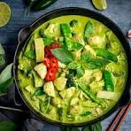

Thai green

A coconut-based curry with green curry paste, meat, and vegetables.
Ingredients:
- 300g chicken or tofu
- 2 tbsp green curry paste
- 1 cup coconut milk
- 1 cup mixed veggies (bell peppers, bamboo shoots)
- 1 tbsp fish or soy sauce
- Thai basil (optional)
Steps:
- Sauté curry paste in a little oil (1 min).
- Add chicken and stir until coated.
- Pour in coconut milk and simmer 10 min.
- Add veggies, cook 5 more min.
- Season with fish sauce, add basil. Serve with jasmine rice.